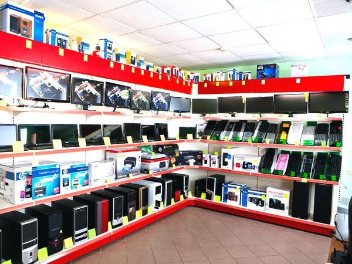

Купуйте техніку у авторитетних магазинах
Вирішивши придбати комп'ютер, уважно вибирайте магазин, в якому купуватимете техніку. Це обов'язково має бути перевірена фірма.
Зараз є чимало фірм-"одноденок", які з'являються на ринку на певний період, і дуже швидко зникають. Зверніть увагу на те, чи довго фірма перебуває на ринку, який у неї авторитет, як про неї відгукуються клієнти. Не йдіть у перший-ліпший магазин.
Найкраще, якщо сервісний центр буде у вашому місті. Проте, якщо фірма має хороший авторитет, але її сервісні центри зосереджені у інших містах, ви не дуже ризикуєте.
Купуючи комп'ютер, зверніть увагу на те, на скільки дається гарантія на техніку. Якщо це підозріло короткий термін, то подумайте, чи варто у цьому місті купувати товар. Попередньо пошукайте інформацію про те, чи були у фірми випадки невиконання гарантійних зобов'язань.
Якщо ваш ПК чи ноутбук перестав функціонувати, але ще перебуває на гарантії, в жодному разі не лізьте усередину. Бо у сервісній службі помітять незначне зовнішнє втручання і можуть відмовитися від безкоштовного ремонту.
Якщо термін гарантійного зобов'язання минув, у сервісних центрах діє постгарантійне обслуговування, тобто, вони усуватимуть поломку за ваші гроші.
Гарантію на комп'ютерну техніку виписують на термін від 1 до 3 років, на дрібніше устаткування до комп'ютера (флешки, клавіатура, вебкамери і т. інше) - на півроку.
Будь-яку техніку можна повернути до магазину протягом двох тижнів, але лише за тієї умови, якщо не буде пошкодження упаковки. Тобто, у якому вигляді ви купили цю річ, у такому ж повинні й повернути її, без обов'язкового вказування причин.
Оскільки ПК чи його складові з часом стають застарілими, деякі магазини надають таку послугу, як обмін старих частин на нові з доплатою.
